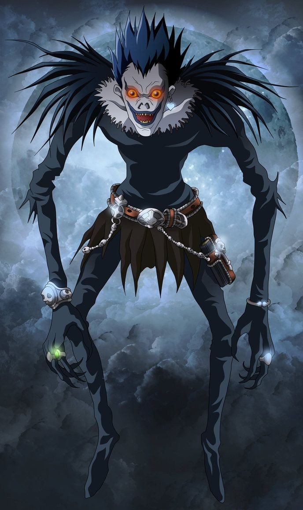

Death Note
Death Note is a Japanese manga series written by Tsugumi Ohba and illustrated by
Takeshi Obata. The story follows Light Yagami, a teen genius who discoveres a
mysterious notebook: the "Death Note", which belonged to the shinigami Ryuk, and grants
the user the supernatural ability to kill anyone whose name is written in its pages.
The series centers around Light's subsequent attempts to use the Death Note to carry
out a worldwide massacre of inidividuals whom he deems immoral and to create a crime-free
society, using the alias of a god-like vigilante named "Kira", and the subsequent efforts
of an elite Japanese police task force, led by enigmatic detective L, to apprehend him.
A 37-episode anime television series adaptation, produced by Madhouse and directed
by Tetsuro Araki, was broadcasted on Nippon Television from October 2006 to June
2007. A light novel based on the series, written by Nisio Isin, was also released in
2006. Aditionally, various video games have been published by Konami for the Nintendo DS.
The series was adapted into three live action films released in Japan in June 2006, November 2006,
and February 2008, and a television drama in 2015. A miniseries titled Death Note: New Generation
and a fourth film adaptation was released exclusively on Netflix in August 2017 and a
sequel is reportedly in the works.
Source: Wikipedia